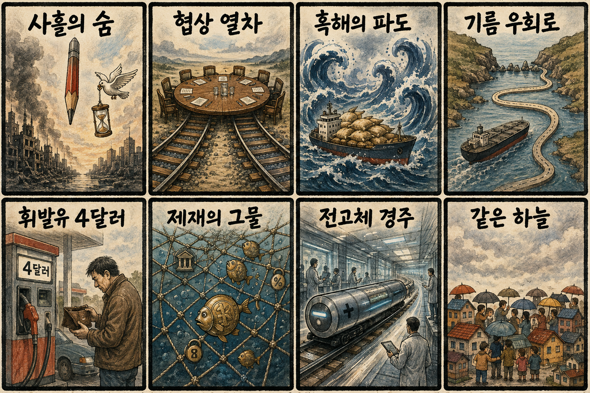
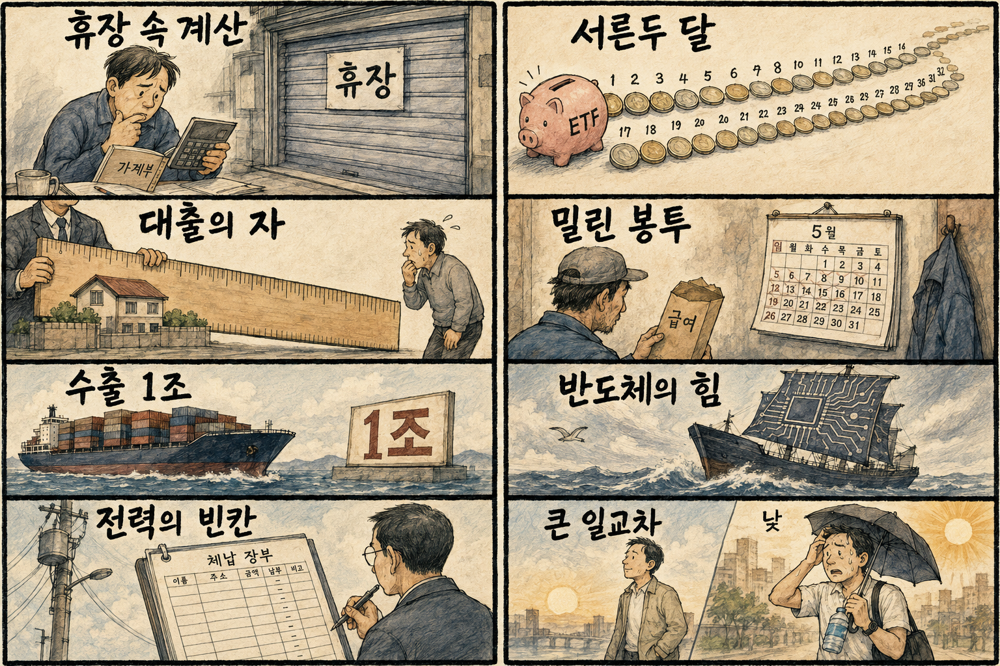

01
마벨 · 211.66→223.55달러 · +5.62%
내용요약 시가 대비 5.62% 상승해 반도체 종목 내 강한 상대 흐름을 보였습니다.
예상여파 국내 HBM·반도체 설계와 데이터센터 연결 종목의 심리를 지지할 수 있지만 휴장 뒤 갭 추격은 피해야 합니다.
MORNING_BRIEFING_20260906
작성 시각: 2026-09-06 06:40 KST · 직전 미국 정규장과 2026-09-06 KST 당일 공개 기사 기준
직전 미국 정규장인 9월 4일에는 예상보다 강한 고용 신호가 금리 인상 경계를 되살리며 다우 -0.51%, S&P 500 -0.38%, 나스닥 -0.29%로 하락했습니다. 반도체 안에서는 마벨 +5.62%, 마이크론 +4.66%, 인텔 +3.62%로 차별화가 나타났습니다. 오늘은 일요일로 한국 증시가 휴장하므로 즉시 매매보다 다음 거래일의 미국 물가·금리 기대와 반도체 수급을 준비하는 날입니다.
| 지수 | 종가 | 등락률 | 한국 증시 시사점 |
|---|---|---|---|
| 다우존스 | 53,414.25 | -0.51% | 경기·금리 경계 |
| S&P 500 | 7,718.60 | -0.38% | 성장주 변동성 경계 |
| 나스닥 종합 | 26,506.99 | -0.29% | 성장주 변동성 경계 |
고용 호조가 통화긴축 우려를 다시 키웠습니다.
냉각장치·CPU·기판·고순도 소재가 새 투자축으로 부상했습니다.
9월 4일 반도체 반등으로 시가 대비 +0.49%를 기록했습니다.
오늘은 거래가 없고 검증 문턱을 충족한 후보도 없습니다.
9월 5일 보고서는 토요일 휴장과 검증 문턱 미충족으로 공식 추천을 내지 않았습니다. 게시 당시 판단은 그대로 유지되며 사후 종목을 추가하지 않습니다.
| 시장 | 종가 | 등락률 | 기준 |
|---|---|---|---|
| KOSPI | 6,687.21 | +1.64% | 9월 4일 · 시가 대비 +0.49% |
| KOSDAQ | 813.50 | +2.95% | 9월 4일 · 시가 대비 +1.39% |
| 다우존스 | 53,414.25 | -0.51% | 미국 9월 4일 정규장 |
| S&P 500 | 7,718.60 | -0.38% | 미국 9월 4일 정규장 |
| 나스닥 종합 | 26,506.99 | -0.29% | 미국 9월 4일 정규장 |
마벨 +5.62%, 마이크론 +4.66%, 인텔 +3.62%로 시가 대비 상승했습니다.
슈퍼마이크로 +3.75%, AMD +3.37%로 견조했습니다.
애플 -2.54%, 테슬라 -2.24%, 마이크로소프트 -2.02%였습니다.
넷플릭스 -4.77%로 조사 종목 중 낙폭이 컸습니다.
내용요약 시가 대비 5.62% 상승해 반도체 종목 내 강한 상대 흐름을 보였습니다.
예상여파 국내 HBM·반도체 설계와 데이터센터 연결 종목의 심리를 지지할 수 있지만 휴장 뒤 갭 추격은 피해야 합니다.
내용요약 시가 대비 4.66% 오르며 메모리 업종의 강세를 이끌었습니다.
예상여파 삼성전자·SK하이닉스 투자심리에 긍정적 연결고리지만 미국 고용발 금리 부담과 함께 판단해야 합니다.
내용요약 시가 대비 3.62% 상승해 지수 하락장에서 상대 강세를 기록했습니다.
예상여파 미국 반도체 생산·정책 기대가 이어질 경우 국내 장비·소재주는 수혜와 경쟁 압력을 동시에 받을 수 있습니다.
내용요약 시가 대비 3.75% 올라 AI 서버 수요 기대가 유지됐습니다.
예상여파 데이터센터 전력·냉각·기판 수요 심리를 지지하지만 개별 기업 변동성이 높아 추격 위험이 큽니다.
내용요약 시가 대비 4.77% 하락해 대형 성장주 가운데 뚜렷한 약세였습니다.
예상여파 금리 우려가 커질 때 장기 성장 기대에 의존하는 고평가 플랫폼주의 할인율 부담이 확대될 수 있습니다.
오늘은 일요일로 한국 증시가 휴장합니다. 다음 거래일에는 미국 지수 하락과 금리 경계가 상단을 누르겠지만 마이크론·마벨·인텔의 상대 강세, 국내 수출 호조와 9월 4일 KOSPI +1.64%, KOSDAQ +2.95% 반등이 완충재입니다. 원화·외국인 선물과 대형 반도체의 시초가 안착을 확인하고, 유가·곡물가 상승이 비용주에 미칠 영향도 함께 봅니다.
오늘은 추천 없음 — 현금 관망
일요일 휴장이고, 전일까지의 외국인·기관 수급, 컨센서스 변화, 30건 이상 유사 조건 확률 보정, 예상 손익비 1.5 이상을 동시에 검증한 국내 종목이 없습니다. 점수와 확률을 임의로 만들지 않습니다.
관심 연결종목 AI 냉각·반도체 소재·대형 메모리주는 다음 거래일 관찰 대상일 뿐 매수 추천이 아닙니다. 주말 호재로 장전 급등하거나 과도한 갭이 발생하면 추격매수 금지입니다.
일요일 뉴스만으로 주문 판단을 서두르지 않고 다음 거래일 시초가를 기다립니다.
강한 고용과 휘발유 가격 상승 뒤 CPI·PPI 예상치가 금리 경로를 움직이는지 봅니다.
냉각장치·CPU·기판·고순도 소재의 수주와 병목 신호를 구분합니다.
사흘간 수도 공격 중단이 협상으로 이어지는지, 유가·곡물가가 안정되는지 점검합니다.
핵심 요약: AI 투자의 초점이 GPU에서 냉각장치·CPU·기판·고순도 소재와 사람 중심의 보안 통제로 넓어지고 있습니다. 수주 증가와 실제 이익 전환, 공급 병목과 상용화 검증을 나눠 볼 시점입니다.
내용요약 AI 데이터센터 발열이 커지면서 국내 냉각장치 업체의 수주가 늘고 있다는 당일 보도입니다. 칩 성능 경쟁이 전력·열관리 설비 투자로 번지는 흐름을 짚었습니다.
예상여파 액침·수랭식 냉각, 열교환기와 전력 효율 기술의 수요가 커질 수 있지만 수주잔고와 실제 이익 전환을 구분해야 합니다.
내용요약 AI가 고도화될수록 사람이 보안과 통제를 주도해야 한다는 국내 보안기업 인터뷰입니다. 자율형 시스템의 오작동과 권한 남용 대응이 핵심입니다.
예상여파 기업 도입 기준이 모델 성능만이 아니라 접근권한, 행위 추적, 중단 장치와 책임 체계까지 넓어질 전망입니다.
내용요약 첨단 공정과 기판 공급이 애플·엔비디아에 집중되면서 서버 CPU 공급망이 제약받을 수 있다는 당일 분석입니다.
예상여파 AI 인프라 병목이 GPU에서 CPU·기판으로 옮겨가면 서버 조달 기간과 데이터센터 구축비가 함께 늘어날 수 있습니다.
내용요약 AI 반도체용 고순도 소재 수요에 맞춰 OCI가 인산에 이어 과산화수소 사업을 확대한다는 당일 보도입니다.
예상여파 반도체 투자 회복이 소재 주문으로 이어질 수 있으나 증설 시기, 고객 인증과 가동률이 실적 반영 속도를 좌우합니다.
내용요약 서로 다른 드론과 지상 로봇의 시각 정보를 연결해 낯선 환경의 길찾기에 활용하는 AI 연구를 소개한 당일 보도입니다.
예상여파 재난·산림·물류 로봇의 협업 범위가 넓어질 수 있고 센서 표준화와 실제 환경 검증이 상용화의 관건입니다.
핵심 요약: 러시아·우크라이나의 사흘간 수도 공격 중단이 협상 여지를 만들었지만 흑해 곡물과 중동 유가의 긴장은 이어집니다. 일본의 전고체 배터리 경쟁과 미국 휘발유 가격 부담까지 공급망·물가 변수가 동시에 부각됐습니다.
내용요약 미국 특사단의 러시아·우크라이나 연쇄 방문을 계기로 양측이 사흘간 수도 공격을 중단했다는 당일 보도입니다.
예상여파 짧은 공격 중단은 협상 공간을 만들지만 전면 휴전과는 거리가 있어 에너지·곡물의 위험 프리미엄은 남을 수 있습니다.
내용요약 흑해 긴장으로 국제 곡물 선물가격이 3분기 6.2% 올랐다는 당일 보도입니다. 운송 위험과 공급 차질 우려가 가격에 반영되고 있습니다.
예상여파 사료·식품 원가가 시차를 두고 오르면 취약국의 식량안보와 각국 소비자물가에 부담이 될 수 있습니다.
내용요약 미국의 대이란 금융제재와 중동 정세를 배경으로 9월 4일 국제유가가 상승했다는 에너지 전문지 보도입니다.
예상여파 유가 상승이 지속되면 운송·화학 업종의 비용과 인플레이션 기대가 높아지고 통화완화 여력이 줄 수 있습니다.
내용요약 일본이 전고체 배터리 육성 전략을 개정해 시장 선점에 속도를 낸다는 당일 보도입니다.
예상여파 배터리 경쟁이 생산 규모에서 소재·안전성·특허로 확대되며 한국 기업의 연구개발과 공급망 투자 압력도 커질 수 있습니다.
내용요약 미국 노동절 휘발유 가격이 갤런당 4달러를 넘어 역대 최고가 될 것이라는 전망을 전한 연합뉴스 보도입니다.
예상여파 가계의 이동비 부담이 소비심리를 누르고 에너지 가격이 물가와 금리 기대를 다시 자극할 수 있습니다.

핵심 요약: 개인의 ETF 순매수는 장기화되고 수출 누계는 강한 흐름을 보였습니다. 대출 규제의 실효성, 외국인 근로자 임금체불, 전력 재정 관리와 큰 일교차가 금융·산업·생활의 주요 점검축입니다.
내용요약 코스피가 지지부진한 기간에도 개인투자자의 ETF 순매수가 32개월 연속 이어졌다는 연합뉴스 당일 보도입니다.
예상여파 직접 종목보다 분산상품을 택하는 흐름이 굳어지며 지수형·채권형·테마형 상품 간 자금 이동이 시장 수급에 영향을 줄 수 있습니다.
내용요약 국회 대정부질문에서 대출 규제 정책의 실효성이 쟁점이 될 것이라는 주간 금융 이슈 보도입니다.
예상여파 가계부채 억제와 실수요 보호 사이의 정책 조정이 은행 대출, 주택 거래와 소비 여력에 직접 영향을 미칠 수 있습니다.
내용요약 외국인 근로자 임금체불을 정부가 대신 지급한 금액이 연 402억원에서 791억원으로 96% 늘었다는 당일 보도입니다.
예상여파 체불 예방과 사업주 책임 강화가 늦어지면 재정 부담뿐 아니라 산업현장의 인력 확보와 정착 신뢰에도 악영향이 생길 수 있습니다.
내용요약 올해 수출 누계가 이미 지난해 연간 실적을 넘어섰고 12월 초 1조달러 가능성이 언급됐다는 YTN 당일 보도입니다.
예상여파 반도체 중심의 수출 호조가 성장과 원화에 힘을 보탤 수 있지만 품목 집중과 대외 수요 변동 위험은 함께 관리해야 합니다.
내용요약 일요일 전국이 대체로 맑고 선선하며 서울 낮 기온은 28도 안팎이라는 당일 예보입니다.
예상여파 야외활동 여건은 양호하지만 아침·낮 기온 차가 커 얇은 겉옷과 수분 보충이 필요합니다.
